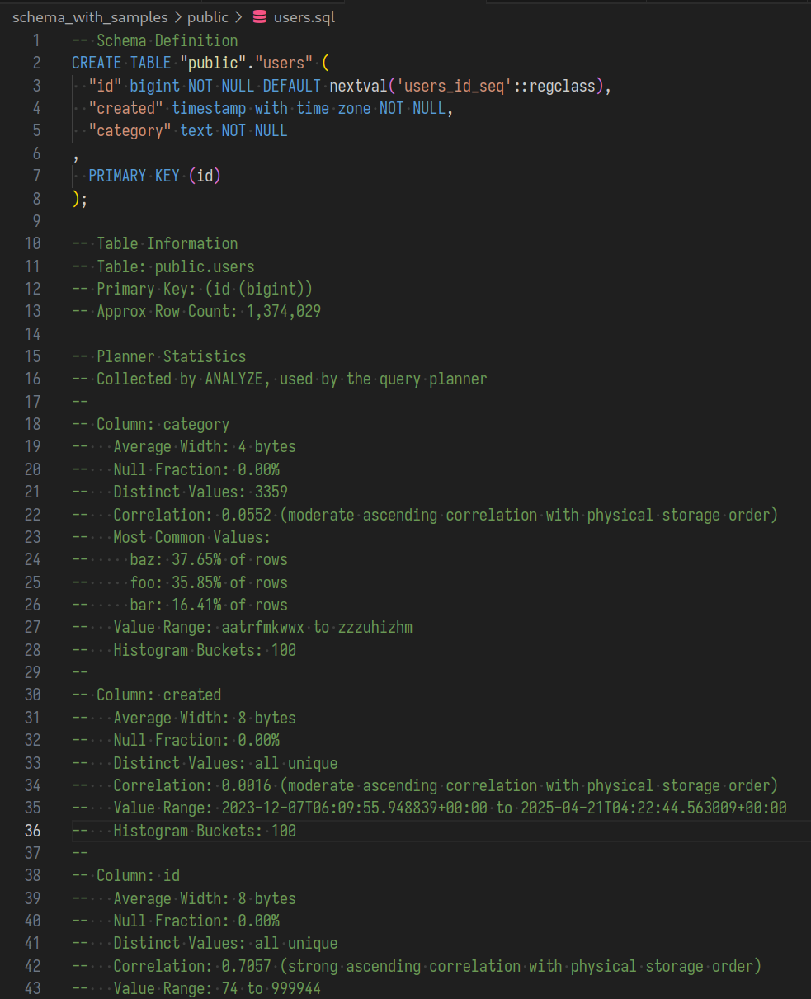

Using PostgreSQL production query planner statistics to fill a mock database
Did you know that PostgreSQL stores statistics about your data that can also be pretty useful not just for the query planner?
Say you have a table users (id bigint, created timestamptz, category text):
analyze;
select * from pg_stats where tablename = 'users';schemaname | public
tablename | users
attname | created
null_frac | 0
n_distinct | -0.997816
most_common_vals |
most_common_freqs |
histogram_bounds | {"2024-01-01 00:12:56.0448+00","2024-01-04 18:19:55.344+00",...}
[...]
-----------------------
schemaname | public
tablename | users
attname | category
null_frac | 0
n_distinct | 4561
most_common_vals | {baz,foo,bar,slikmjelq,mltsglvtdc}
most_common_freqs | {0.37733333,0.35873334,0.16336667,0.0878,0.015766667}
histogram_bounds |
[...]This information is a bit hard to interpret, so let’s just let AI give us a nice visualization of the stats:
PostgreSQL by default looks at 30 thousand rows of each table and then stores mainly two types of information for each column, depending on what it finds:
- The most common values, each with a percentage. (Only if some values are more common than others)
- A histogram with equal-sized buckets to show the distribution of values (Only if not all values are present in the common vals list)
In addition, it stores how many % of rows have null values and which fraction is unique. This is described in detail in the docs for pg_stats.
One major limitation is that the statistics are completely separate per column. PG can also collect multivariate statistics, but this is not active by default so we’ll ignore it.
Generating mock rows
This means that we can now generate mock data by just sampling from the distributions!
I had AI write some code spent time writing my own code with love to do this for me:
https://github.com/phiresky/postgresql-planner-stats-to-mock-data
# run against prod, writes a json file with the tables and stats per column
$ PGPASSWORD=xxx
npm run extract-postgresql-stats postgresql://user@production
Processing public.users [1974 ms]This will give you a JSON file as well as a readable summary per table that you could for example use to create smarter mock data generation code: 
Then, to fill another database with similar data, run
$ npm run insert-mock-data postgresql://user@staging
Generating data for public.users
Table 1/1 public.users: Inserted 2000/137403 rows
Table 1/1 public.users: Inserted 4000/137403 rows
Table 1/1 public.users: Inserted 6000/137403 rows
Table 1/1 public.users: Inserted 8000/137403 rows
[...]
Data generation completed successfully.For both scripts, you can specify which schemas, tables, and columns to exclude in a config file. In addition, you can specify the number of rows to generate as a fraction of the amount that is present in prod:
{
// see Config.ts
"prodFraction": 0.1,
"excluded": {
"tables": ["private.data"],
"columns": [
{
"column": "public.users.password_hash",
"strategy": "skip"
}
]
}
}I encountered the following problems:
- Primary key + Unique constraints: If you have an
id integercolumn, the distribution of those will be a completely uniform distribution between min(id) and max(id). If you sample from this distribution, you will very quickly encounter a "unique constraint failed" error. We can split this into two cases:- autoincrement / serial / bigserial: For these columns, we simply leave them out and let the DB generate them for us
- unique constraints: This is more tricky. My solution was to store each generated row in memory and then resample if it’s not unique. This is fine when collisions are unlikely, but if the value space is small it can cause issues.
- Foreign keys: If you have tables referencing other tables, then you can’t just blindly generate the referencing keys. Instead, we build a dependency graph and sort the tables in topological order. Then, for each foreign key column we sample from the real previously created rows instead of the statistics.
- Private data: My goal here is to use real production statistics but use the results in dev environments. The statistics include real samples from the source tables. We can’t leak sensitive data like email addresses or password hashes, so I added a configuration with a list of columns to excluded and which values to use instead.
- I found these values by feeding my whole schema (4000 lines) into AI and letting it give me suggestions for columns that might be sensitive.
- CHECK constraints: These are more difficult to solve, so I didn’t bother solving them in a general manner - the solution to the "private data" issue also solves this.
Alternatives / Motivation
My main motivation here was that we have a large (10 TB, a few tables with 1-10 billion rows) production database, and our developers very often write DB migrations or queries that work perfectly fine in development (where each table has 10k rows max) but are impossible to make work on production.
For a developer, it’s difficult to learn all the details on when which index applies and especially when a migration locks/rewrites a table and doesn’t. This even changes between each PostgreSQL version. Just as an example, answer this question:
If you add a text column with a default on a table with a billion rows, does this lock and rewrite the table or no? What if you now change the default afterwards?
This is described in the docs: Adding a column with a default used to lock but doesn’t anymore (since PG12 or so), but the second one still locks. The PG docs are good, but it’s still better to verify with a real database - and quicker if you have it around anyways.
Alternative 1: Generating mock data from your application code
This would likely be the best solution, and we do have some code for this purpose. But it’s difficult to maintain it, you’d basically have to make adding code for this a requirement for every new feature. And by experience this data is often actually not that similar to real data, for example because you usually have very long-tail behaviour, with 5% of users doing 90% of actions.
Alternative 2: Generating rows with AI
This is actually what I wanted to start with: Feed the schema into AI, let it write code to generate N rows. But then I realized the AI needs to see some real samples, so I added that. Then I also realized I can also feed it the statistics that PG already knows to make it better. At that point I realized that it’s much more robust to just take AI out of the loop and generate rows purely based on the statistics.
The best-case quality of the resulting rows would be better with AI (e.g. if it sees a field named "email" it could generate realistic looking emails), but the fragility and worst-case quality makes it much more tedious to work with.
A prompt to do this based on the result of the first step is still in the repo.
Alternative 3: Generating data purely based on the schema
This is of course possible, but you’ll miss out on a ton of realism. For example, a text column is very often actually more like a mix of enum and free form text, with a few very common values. An integer or enum is often 0, 1 or first_enum_value. Often there’s columns that are null 100% of the time.
If you just sample randomly, you won’t get the same query plans as on production. Since getting realistic DB interaction was my main goal, using the real statistics greatly goes towards this goal.
Accuracy
Remember that PG makes statistics by sampling during analyze. So make sure you run analyze before trying this, and I’d also recommend to alter system set default_statistics_target = 1000 to 10x the sample size. Depending on how strict your application is, it might crash when seeing the mock data. My goal was to just be able to just have devs be able to try out migrations and realistic queries, but if you need your application running you might need custom code to generate data instead.